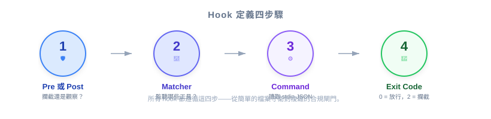
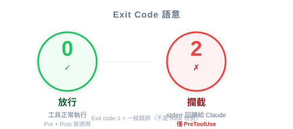

| 項目 | 細節 |
|---|---|
| 考試領域 | D3 — Claude Code Configuration & Workflows (20%) |
| Task Statements | 3.2 (custom commands & hooks), 1.5 (Agent SDK hooks for tool call interception) |
| 來源 | claude-code-in-action / 05-hooks / Lesson 15 |
定義一個 hook 分四步：選擇 PreToolUse 或 PostToolUse、透過 matcher 選取要攔截的工具、撰寫從 stdin 讀取 tool call JSON 的 command、回傳 exit code（0 = 允許，2 = 封鎖）。
前一堂課你學了 hooks 是什麼。這堂課專注在如何定義一個 hook ——這四步驟心智模型適用於從簡單檔案防護到複雜合規閘門的所有場景。
💡 iOS/Swift 類比
定義 hook 就像註冊一個
URLProtocol子類別：你宣告要攔截哪些 request（canInit(with:)），寫處理邏輯，然後回傳結果。系統會在正確的時間點自動呼叫你。

| 決策 | PreToolUse | PostToolUse |
|---|---|---|
| 何時執行？ | tool 執行之前 | tool 執行之後 |
| 能封鎖嗎？ | 可以（exit code 2） | 不行（已經執行了） |
| 類比 | URLProtocol.canInit(with:) — 載入前拒絕 |
URLSessionTaskDelegate.didFinishCollecting — 完成後檢查 |
⚠️ 關鍵決策點
如果目標是阻止一個動作，必須用 PreToolUse。PostToolUse hook 無法撤銷已經發生的事情 — tool 已經執行完了。
matcher 欄位使用類似 regex 的語法來指定觸發 hook 的工具：
"matcher": "Read" // 單一工具
"matcher": "Read|Grep" // 多個工具（OR）
"matcher": ".*" // 所有工具（萬用字元）
可以匹配的內建工具：
| 工具 | 用途 |
|---|---|
Read |
讀取檔案內容 |
Write |
建立或覆寫檔案 |
Edit |
修改既有檔案 |
MultiEdit |
一次呼叫中多處修改 |
Bash |
執行 shell 命令 |
Grep |
搜尋檔案內容 |
Glob |
依模式尋找檔案 |
WebFetch |
抓取 URL 內容 |
💡 發現可用工具
直接問 Claude：「列出你目前可使用的所有 tool 名稱。」當 MCP server 加入自訂工具時特別有用。
你的 hook command 會從 standard input 收到一個 JSON 物件：
{
"session_id": "2d6a1e4d-6...",
"transcript_path": "/Users/sg/...",
"hook_event_name": "PreToolUse",
"tool_name": "Read",
"tool_input": {
"file_path": "/code/queries/.env"
}
}
你的 command 應檢查的關鍵欄位：
| 欄位 | 用途 |
|---|---|
tool_name |
Claude 正在呼叫哪個工具 |
tool_input |
Claude 傳入的參數（檔案路徑、命令等） |
hook_event_name |
確認這是 PreToolUse 還是 PostToolUse |
session_id |
識別當前 session（用於 logging） |
📝 實作備註
Command 可以是任何可執行程式：Node.js 腳本、shell script、Python 腳本，甚至編譯過的二進位檔。Claude 不在乎語言 — 只看 exit code。

| Exit Code | 意義 | 適用對象 |
|---|---|---|
0 |
允許 — tool call 繼續執行 | PreToolUse 和 PostToolUse |
2 |
封鎖 — tool call 被拒絕 | 僅 PreToolUse |
以 exit code 2 結束時：
- 寫到 stderr 的文字會作為回饋發送給 Claude
- Claude 看到拒絕原因後可以調整行為
- 這創造了回饋迴圈：封鎖 + 解釋 → Claude 嘗試不同方法
⚠️ Exit code 2 僅適用於 PreToolUse
在 PostToolUse hook 中使用 exit code 2 不會有封鎖效果 — tool 已經執行完了。
{
"hooks": {
"PreToolUse": [
{
"matcher": "Read|Grep",
"hooks": [
{
"type": "command",
"command": "node ./hooks/read_hook.js"
}
]
}
]
}
}
這個配置的意思是：「在 Claude 呼叫 Read 或 Grep 之前，執行 read_hook.js。腳本從 stdin 讀取 tool call JSON，決定允許或封鎖，然後以 exit code 0 或 2 結束。」
| ❌ 錯誤做法 | ✅ 正確做法 | 為什麼 |
|---|---|---|
| 用 PostToolUse 來「防止」檔案讀取 | 用 PreToolUse 在執行前封鎖 | PostToolUse 無法撤銷已完成的讀取 |
| 在 system prompt 加「永不讀取 .env」 | 用 PreToolUse hook 搭配 Read|Grep | Prompt 指令有非零失敗率 |
只 match Read 來防護檔案存取 |
Match Read\|Grep（兩者都能存取檔案內容） |
Grep 也能暴露檔案內容 |
| 在 matcher 裡寫死檔案路徑 | 用 matcher 選工具，在 command 邏輯中檢查路徑 | Matcher 選的是工具，不是檔案路徑 |
| exit code 2 時忘記處理 stderr | 將清楚的拒絕原因寫到 stderr | Claude 需要回饋來理解為何操作被封鎖 |
在 CCA 考試中，hook 定義題通常測試你是否能：
核心考試哲學：
- Architecture > Prompt — hook 是結構性強制執行，不是建議
- Deterministic > Probabilistic — exit code 2 是保證封鎖，不是「請不要」
你正在為一個處理敏感客戶資料的團隊建立 Claude Code 工作流程。.env 檔案包含 API key 和資料庫憑證。你需要確保 Claude 永遠不能透過任何工具存取其內容。哪個 hook 配置正確？
Read，檢查檔案路徑中的 .envRead，檢查檔案路徑中的 .envRead|Grep，檢查檔案路徑中的 .env你的 CI pipeline 用 Claude Code 生成文件。你想記錄 Claude 執行的每個 Bash 命令供審計，但不封鎖任何操作。哪個 hook 定義適當？
Bash，logging 後 exit code 0Bash，logging 後 exit code 0Bash，logging 後 exit code 2.*，exit code 2研究代理使用多個 MCP tool 查詢不同資料源。你需要將這些工具回傳的所有日期欄位標準化為 ISO 8601 格式。哪個 hook 方法正確？